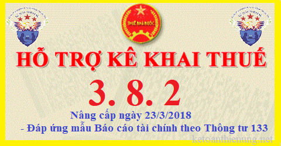

Phần mềm HTKK 3.8.2 của Tổng cục thuế nâng cấp ngày 23/3/2018, đây là phần mềm HTKK mới nhất hiện nay, đáp ứng mẫu Báo cáo tài chính theo Thông tư 133. Tải Phần mềm HTKK 3.8.2 về tại đây:
TỔNG CỤC THUẾ THÔNG BÁO
V/v: Nâng cấp ứng dụng Hỗ trợ kê khai (HTKK) phiên bản 3.8.2, ứng dụng Khai thuế qua mạng (iHTKK) phiên bản 3.6.2, ứng dụng Thuế điện tử (eTax) phiên bản 1.4.2, ứng dụng iTaxViewer phiên bản 1.4.4I. Về việc tiếp nhận Báo cáo tài chính qua Cổng dịch vụ Thuế điện tử
- Để đáp ứng yêu cầu nghiệp vụ theo quy định tại Thông tư số 133/2016/TT-BTC ngày 26/8/2016 của Bộ Tài chính về việc hướng dẫn chế độ kế toán doanh nghiệp nhỏ và vừa; Công văn số 4943/TCT-KK ngày 23/11/2015 của Bộ Tài chính về việc hướng dẫn một số vướng mắc về khai thuế và khai bổ sung hồ sơ khai thuế; Nghị định số 20/2017/NĐ-CP ngày 24/02/2017 của Chính Phủ về việc quy định về quản lý thuế đối với doanh nghiệp có giao dịch liên kết; Tờ trình Bộ số 3109/TTr-TCT ngày 09/05/2016 của Tổng cục Thuế về việc kết nối dữ liệu từ Tập đoàn Xăng dầu Việt Nam tới cơ quan Thuế, Tổng cục Thuế đã hoàn thành nâng cấp ứng dụng Hỗ trợ kê khai thuế (HTKK) phiên bản 3.8.2, ứng dụng Khai thuế qua mạng (iHTKK) phiên bản 3.6.2, ứng dụng Thuế điện tử (eTax) phiên bản 1.4.2, ứng dụng iTaxViewer phiên bản 1.4.4, cụ thể như sau:
1. Nâng cấp ứng dụng Hỗ trợ kê khai thuế (HTKK) phiên bản 3.8.2, ứng dụng Khai thuế qua mạng (iHTKK) phiên bản 3.6.2, ứng dụng Thuế điện tử (eTax) phiên bản 1.4.2
- Đáp ứng thông tư số 133/2016/TT-BTC ngày 26/8/2016 của Bộ Tài chính:
+ Bổ sung Bộ báo cáo tài chính dành cho doanh nghiệp vừa và nhỏ hoạt động liên tục mẫu B01a.
+ Bổ sung Bộ báo cáo tài chính dành cho doanh nghiệp vừa và nhỏ hoạt động liên tục mẫu B01b.
+ Bổ sung Bộ báo cáo tài chính dành cho doanh nghiệp vừa và nhỏ hoạt động không liên tục.
+ Bổ sung Bộ báo cáo tài chính dành cho doanh nghiệp siêu nhỏ.
- Đáp ứng công văn 4943/TCT-KK ngày 23/11/2015 của Bộ Tài chính:
+ Tờ khai bổ sung 01/TTĐB theo TT156: Cho phép kê khai phụ lục 01/PL-XSĐT
+ Tờ khai bổ sung 01/TTĐB theo TT195: Cho phép kê khai phụ lục 01-1/TTĐB, 01/PL-XSĐT
+ Tờ khai bổ sung 03/TNDN: Cho phép kê khai phụ lục 03-1A/TNDN, 03-1B/TNDN, 3-1C/TNDN, 03-2A/TNDN, 03-2B/TNDN, 03-3A/TNDN, 03-3B/TNDN, 03-3C/TNDN, 03-4/TNDN, 03-5/TNDN, 03-6/TNDN, 03-7/TNDN, 03-8/TNDN, 02-1/TĐ-TNDN, 02/TNDN, 01, 02, 03, 04
+ Tờ khai bổ sung 01/GTGT: Cho phép kê khai phụ lục 01-5/GTGT, 01-6/GTGT, 01-7/GTGT, 01-1/TĐ-GTGT, 01-2/TĐ-GTGT, 01/PL-XSĐT
+ Tờ khai bổ sung 03/TĐ-TAIN: Cho phép kê khai phụ lục 03-1/TĐ-TAIN
+ Tờ khai bổ sung 03A/TĐ-TAIN: Cho phép kê khai phụ lục 03-1/TĐ-TAIN
- Đáp ứng nghị định 20/2017/NĐ-CP ngày 24/02/2017 của Chính Phủ:
Tờ khai Quyết toán thuế TNDN mẫu 03/TNDN bổ sung thêm 4 phụ lục mới:
+ Bổ sung phụ lục Thông tin về quan hệ liên kết và giao dịch liên kết mẫu 01
+ Bổ sung phụ lục Danh mục các thông tin, tài liệu cần cung cấp tại hồ sơ quốc gia mẫu 02
+ Bổ sung phụ lục Danh mục các thông tin, tài liệu cần cung cấp tại hồ sơ toàn cầu mẫu 03
+ Bổ sung phụ lục Kê khai thông tin báo cáo lợi nhuận liên quốc gia mẫu 04
- Đáp ứng Tờ trình Bộ số 3109/TTr-TCT ngày 09/05/2016 của Tổng cục Thuế về việc kết nối dữ liệu từ Tập đoàn Xăng dầu Việt Nam tới cơ quan Thuế (riêng ứng dụng eTax):
+ Bổ sung tờ khai Báo cáo sản lượng mua xăng dầu (mẫu số 01a theo tháng, mẫu 01b theo quý).
+ Bổ sung tờ khai Báo cáo về hoạt động bán hàng mẫu số 02.
+ Bổ sung tờ khai Báo cáo kết quả hoạt động kinh doanh mẫu số 03.
+ Tờ khai bổ sung 03/LNCL-XSDT: Cho phép kê khai phụ lục 01/PL-XSĐT
+ Tờ khai bổ sung 01/TĐ-GTGT: Cho phép kê khai phụ lục 01-2/TĐ-GTGT
2. Nâng cấp ứng dụng iTaxViewer 1.4.4
- Nâng cấp ứng dụng iTaxViewer phiên bản 1.4.4 đáp ứng các nội dung nâng cấp của các phiên bản ứng dụng HTKK, iHTKK, eTax nêu trên.
Từ ngày 23/3/2018, khi kê khai tờ khai thuế có liên quan đến nội dung nâng cấp nêu trên, tổ chức cá nhân nộp thuế sử dụng các mẫu biểu kê khai tại ứng dụng HTKK 3.8.2, iHTKK 3.6.2, eTax 1.4.2 thay cho các phiên bản trước đây.
Tải Phần mềm HTKK 3.8.2 về tại đây:

II. Thời hạn nộp Báo cáo tài chính:
- Hạn nộp báo cáo tài chính và tờ khai quyết toán thuế thu nhập doanh nghiệp mẫu 03/TNDN là ngày 31/03 hàng năm. Tuy nhiên, do ngày 31/3/2018 là ngày thứ 7 nên thời hạn nộp Báo cáo tài chính năm 2018 là hết ngày thứ 2 (2/4/2018). Đề nghị Quý Doanh nghiệp nộp Báo cáo tài chính đúng thời hạn quy định.
-----------------------------------------------------------------
Kế toán Diệu Tâm chúc các bạn thành công!
